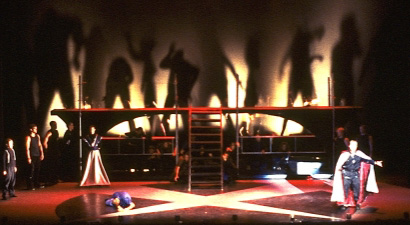
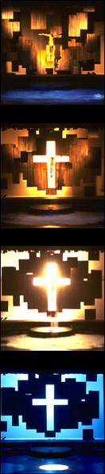
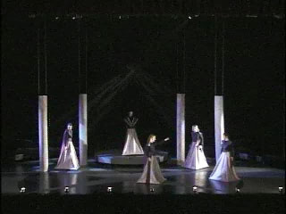
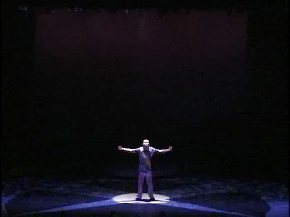

This show was an enormous technical and artistic challenge. Jesus Christ Superstar is a rock opera, and we wanted to produce something as visually impressive as a rock concert.
The set was technically complex, with set pieces that moved forward and backward onstage, rolled in from the sides, were lowered from the ceiling, and even rose out of the floor. Parts of the background could be raised or lowered independently to change the background pattern, which was especially impressive in one of the final scenes, when the apparently random background plates rearrange to form the outline of a cross. One of our technical challenges was making sure that the lighting and set would work together.
The lighting design also incorporated moving (robotic) lights, color scrollers to change the color of lights, lights mounted inside of some of the moving set pieces, and sections of truss with lights attached that could be raised or lowered. Ensuring that all of this equipment worked properly was an additional technical challenge.
The real success of this show was the fact that despite the technical challenges, we produced a show that was both visually impressive and artistically consistent across all of the show's designs. The diagonally crossed lights behind the priest scenes, for example, echo the diagonal wedges of grey painted on the floor, and also the diagonal lines of the priests' costumes.
-- David Starke'99, MS '00, Lighting Design and Programming
One of the first of the rock operas, Andrew Lloyd Webber's Jesus Christ Superstar is a controversial account of the last two weeks of Christ's life. It opens with his arrival at Bethany, follows him through the last supper, and closes with his crucifixion at the hands of his followers.
JCS is often presented as a parable, transplanting characters from their biblical era into modern contexts. In this Stanford University Ram's Head production, JCS was set in a dark, near-apocalyptic future — the show's subtext addresses a struggle between man and technology, ethical dilemmas of the masses, and love in the midst of chaos. 
Unlike Chess, the tragic processional narrative of JCS required specific location settings, inviting a series of realistic sets as opposed to Chess' single abstract set. Jesus and his apostles were huddled behind rusty gates in Bethany, while the Priests and Romans were flanked by modernist, mechanical structures.
Two raised upstage platforms provided elevation and visibility while leaving ample room downstage for an on-stage graphic over 40 feet in diameter. Each set was substantial enough to comfortably support cast members, but also engineered to move easily and quickly into limited offstage storage space.
The challenge lay in mechanically and conceptually flowing from one set to the next. Since rock opera demands an uninterrupted musical performance, there was no time for behind-the-curtain set changes — everything happened in full view of the audience. Cast, orchestra, and crew all had to work in parallel to make the choreographed transitions elegant and safe. JCS moved through seven major sets (composed of seven rolling wagons, four transforming stage elements, several large-scale props and more than ten scenic linesets), ranking it amongst the most technically ambitious shows to play on, in, and above Memorial Auditorium's stage.
-- Chris Sanders, MA '00, Set Design and Engineering 
Directed
by Dale Stahl
Set Design by Chris Sanders
Lighting Design by David Starke, Caroline Chao, Megan Fuller-Deets
Assistant Lighting Designer: Emily Kuwahara
Costume Design by Alice Louise Dickinson and Elizabeth Martin
Produced by the Ram's Head Theatrical Society
March 1999
